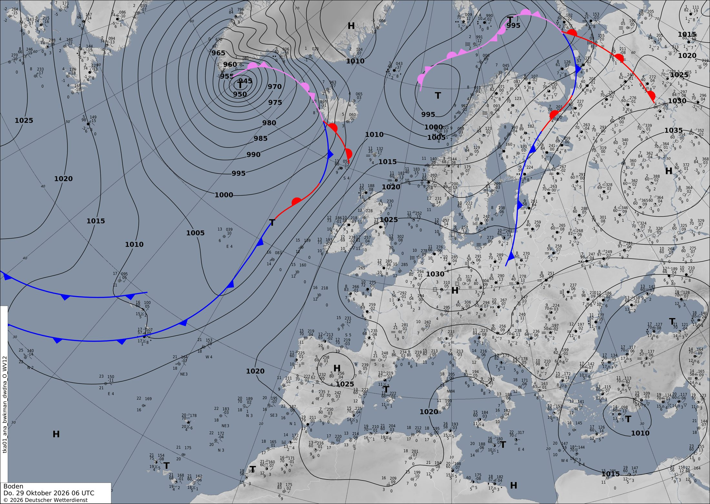

Un bloqueo se arma en el Atlántico y deja la Península con tiempo tranquilo
Una borrasca muy profunda junto a Groenlandia se va debilitando mientras se levanta una gran dorsal frente a Europa. El fin de semana esa dorsal puede convertirse en un bloqueo que aparta las borrascas de la península ibérica.
Europa y el Atlántico
Hoy, jueves 29 a las 00 UTC, la gran protagonista está lejos: una borrasca de 945 hPa sobre el mar de Irminger, entre Groenlandia e Islandia. Es muy profunda: tiene 35 hPa menos que el aire que la rodea. En la carta del DWD de las 06 UTC se ve su frente frío, que baja hacia el suroeste y cruza medio Atlántico. En el satélite infrarrojo ese frente es una larga banda blanca con forma de gancho. Mira aquí.
Al otro lado tenemos aire tranquilo. Un anticiclón de 1030 hPa se sitúa sobre Alemania y otro más débil al noroeste de Lisboa. Por eso casi toda Europa occidental tiene isobaras muy separadas y poco viento.
Qué cambia en tres días:
- Mañana, viernes 30. La borrasca de Irminger se va rellenando: sube a 969 hPa. Pero arriba la corriente en chorro se acelera al oeste de Irlanda, con un núcleo de 292 km/h. Ese río de viento empuja aire templado hacia el norte y levanta una dorsal, una cresta en el mapa de 500 hPa, desde la Península hasta las islas británicas. Fíjate en el mapa de altura.
- Pasado mañana, sábado 31. La dorsal crece. A su derecha, una vaguada baja desde Polonia hacia Europa central. A su izquierda, el extremo sur de la vaguada atlántica se queda atrás, al norte de Canarias. Allí deja una borrasca débil, de unos 1011 hPa, con mucha lluvia en alta mar: hasta 157 mm en 12 h mañana al sur de Azores.
- Domingo 1 (00 UTC). La dorsal se cierra en una gran cúpula de aire templado al noroeste de Galicia. En superficie hay un anticiclón de 1038 hPa al oeste de Irlanda. Justo al sur queda una bolsa fría aislada, una DANA, al norte de Canarias. Una alta encima de una baja es la forma típica de un bloqueo. Mientras tanto, en el este, otra bolsa fría se descuelga sobre Hungría. Mira aquí el bloqueo.
Con un bloqueo, las borrascas del Atlántico ya no pueden seguir hacia el este. Tienen que rodearlo por el norte, cerca de Groenlandia e Islandia. Ojo: a +72 h los bloqueos son difíciles de predecir y el modelo puede moverlo o deshacerlo antes.
En península ibérica y Baleares
La península ibérica y Baleares quedan casi todo el periodo bajo presiones altas, entre 1017 y 1027 hPa. En la carta del DWD de las 06 UTC se ve una H de 1025 hPa en el centro peninsular y una T pequeña cerca de Valencia. El modelo, en cambio, pone el anticiclón algo más al oeste, frente a Lisboa. Son diferencias pequeñas, típicas de una situación con poca presión de diferencia entre zonas.
Temperaturas. Con el anticiclón, el aire baja despacio y el cielo queda bastante despejado. Por eso las noches son frías en el interior: hoy hay mínimas de −1 °C en algún punto. De día se llega a unos 26 °C en las zonas más cálidas. A 850 hPa (unos 1500 m) la masa de aire baja de unos 12 °C de media a unos 10 °C el domingo. El fin de semana irá refrescando poco a poco, porque el bloqueo deja entrar algo de aire del norte por su lado este.
Lluvia y tormentas. Las bajas débiles del Mediterráneo dejan algo de nubosidad y chubascos sueltos. Lo más que acumula el modelo en 12 h son 4–6 mm entre hoy y mañana. Hay CAPE de hasta 1352 J/kg al sureste de Murcia y en el mar de Alborán. Por eso puede haber algún chubasco tormentoso cerca de la costa del sureste, sobre todo en el mar. Mira aquí. Lo más lluvioso llega en la mañana del sábado 31: hasta 12,5 mm en algún punto entre 00 y 12 UTC. Compruébalo aquí. La lluvia fuerte del Atlántico se queda lejos, hacia Azores y Canarias.
Viento. Será flojo o moderado, como mucho de unos 47 km/h en las zonas más expuestas.
Lección del día: Bloqueo atmosférico
Hoy vas a aprender a reconocer un bloqueo en el mapa de 500 hPa.
- Abre el mapa de altura de mañana, a las 00 UTC del viernes. Las isohipsas (las líneas de altura) van más o menos de oeste a este, con alguna ondulación. Es la circulación normal del oeste.
- Pasa al domingo 1 a las 00 UTC: mira aquí. Busca dos cosas. Al noroeste de Galicia, las líneas forman una gran cúpula de 584 dam: es aire templado y alto. Al norte de Canarias, justo debajo, hay un círculo cerrado de 569 dam: es una DANA.
- Fíjate en la presión en superficie. Encima hay un anticiclón de 1038 hPa al oeste de Irlanda y debajo una borrasca débil. Una alta al norte de una baja es la señal clásica de bloqueo.
- Ahora sigue el camino de las borrascas. Ya no pueden ir recto hacia Europa: tienen que rodear la cúpula por el norte, cerca de Groenlandia.
Cuando veas una alta encima de una baja, piensa en un atasco: el tiempo puede quedarse igual varios días.
Ponte a prueba
3 preguntas sobre el tiempo de hoy. Puedes mirar el mapa antes de contestar.
El domingo 1 a las 00 UTC, ¿por qué las borrascas del Atlántico no llegarán a la Península?
¿Qué le pasa a la gran borrasca del mar de Irminger entre hoy y el sábado?
Mañana, ¿dónde es más probable algún chubasco tormentoso en la región foco?
La carta oficial
Análisis de superficie del servicio meteorológico alemán (DWD) válido el 29/10/2026 a las 06 UTC, dibujado por meteorólogos a partir de observaciones. Aquí sí hay frentes: azul con triángulos, frío; rojo con semicírculos, cálido; morado, ocluido. Las borrascas son T y los anticiclones H. Cómo leer esta carta.
